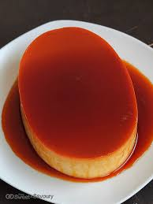

Food Recipes from arond the world!
Here are three recipes from different parts of the world!
Whether you want sweet or savoury dishes, this website has got you covered. These recipes are not only healthy but most importantly, delicous. These recipes won't dissapoint your taste buds!
A main dish full of flavor, juicy meat under the cripsy skin. A favorite for many people.

Fried Chicken
A classic Itatlian pasta. known for its creamy, rich texture and savoury pieces of meat. Loved for its deep savory flavor despite its simplicity.

Carbonara
A beloved Filipino dessert made of egg yolks, milk and other dairy products. A staple for famiily gatherings and holidays.

Leche Flan